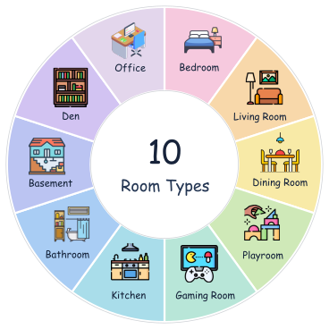
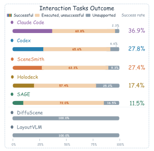
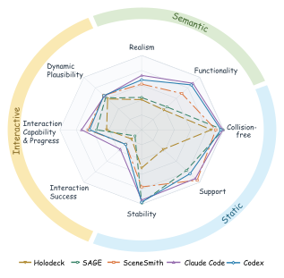

Open fridge
Missing articulation
A visible door is not necessarily an operable door.
Existing evaluations of text-conditioned 3D indoor scene generation largely emphasize semantic fidelity and physical validity at rest, leaving interaction-time physical reliability insufficiently assessed. To address this gap, we introduce ScIntBench, a unified benchmark centered on interaction readiness: it executes prescribed manipulation actions (e.g., pushing, opening, and surface probing) in physics simulation and measures task success, capability and progress, post-interaction integrity, and dynamic plausibility. Multi-view semantic and static physical evaluations complement these metrics and help explain interaction outcomes. We systematically evaluate 12 state-of-the-art scene generation systems across 10 room types. Our results reveal that strong semantic and static physical performance does not necessarily translate into interaction readiness: a system with near-perfect static plausibility completes only 11.54% of interactions, 7 of the 12 systems produce scenes that cannot support any interaction, and even the best system succeeds in only 36.92% of prescribed tasks. These findings highlight two fundamental challenges in generating interaction-ready scenes: providing the necessary physical interaction capabilities and ensuring reliable physical behavior under active manipulation.
Visual realism and static validity tell only part of the story. These assessments provide limited evidence of whether generated scenes can support physical manipulation and exhibit plausible responses to active interaction.
A visible door is not necessarily an operable door.
Passed the static checks, but failed in contact
An action can disrupt objects beyond its target.
A chair can block the door's opening sweep.



Input prompt
A bedroom with a double bed and a mini fridge near the bed, a table across from the door, and a painting on the wall above the bed.
Tasks inferred from the input prompt, with the same task set and success criteria shared across generation methods.
| Task | Target object | Success criteria |
|---|---|---|
| Open hinged partOpen at least 60° from the closed position and hold for 1 s. | Mini fridge | Opening ≥60° throughout the final 1 s; manipulation contact ≥0.1 s; hinge anchor error ≤0.01 m; parent translation ≤0.05 m and rotation ≤10°. |
| Open hinged partOpen at least 60° from the closed position and hold for 1 s. | Door | Opening ≥60° throughout the final 1 s; manipulation contact ≥0.1 s; hinge anchor error ≤0.01 m; parent translation ≤0.05 m and rotation ≤10°. |
| Push objectPush 0.15 m along the prescribed horizontal direction. | Double bed | Displacement 0.13–0.17 m along the prescribed direction throughout the final 1 s; lateral and vertical changes ≤0.03 m; tilt ≤10°; floor support maintained; manipulation contact ≥0.1 s. |
| Push objectPush 0.15 m along the prescribed horizontal direction. | Mini fridge | Displacement 0.13–0.17 m along the prescribed direction throughout the final 1 s; lateral and vertical changes ≤0.03 m; tilt ≤10°; floor support maintained; manipulation contact ≥0.1 s. |
| Push objectPush 0.15 m along the prescribed horizontal direction. | Table | Displacement 0.13–0.17 m along the prescribed direction throughout the final 1 s; lateral and vertical changes ≤0.03 m; tilt ≤10°; floor support maintained; manipulation contact ≥0.1 s. |
| Place and slide probePlace the standard probe, let it settle, then gradually increase horizontal force. | Double bed | Probe settles on the target; sliding begins below the force cap and remains supported for ≥0.20 s over ≥0.02 m; tilt ≤5°; no unrelated contact; kinetic friction is identifiable. |
| Place and slide probePlace the standard probe, let it settle, then gradually increase horizontal force. | Mini fridge | Probe settles on the target; sliding begins below the force cap and remains supported for ≥0.20 s over ≥0.02 m; tilt ≤5°; no unrelated contact; kinetic friction is identifiable. |
| Place and slide probePlace the standard probe, let it settle, then gradually increase horizontal force. | Table | Probe settles on the target; sliding begins below the force cap and remains supported for ≥0.20 s over ≥0.02 m; tilt ≤5°; no unrelated contact; kinetic friction is identifiable. |
Input prompt
A living room with a sofa in front of a wall-mounted TV, a lamp behind the sofa, and a stool near the TV against the wall.
Tasks inferred from the input prompt, with the same task set and success criteria shared across generation methods.
| Task | Target object | Success criteria |
|---|---|---|
| Push objectPush 0.15 m along the prescribed horizontal direction. | Sofa | Displacement 0.13–0.17 m along the prescribed direction throughout the final 1 s; lateral and vertical changes ≤0.03 m; tilt ≤10°; floor support maintained; manipulation contact ≥0.1 s. |
| Push objectPush 0.15 m along the prescribed horizontal direction. | Lamp | Displacement 0.13–0.17 m along the prescribed direction throughout the final 1 s; lateral and vertical changes ≤0.03 m; tilt ≤10°; floor support maintained; manipulation contact ≥0.1 s. |
| Push objectPush 0.15 m along the prescribed horizontal direction. | Stool | Displacement 0.13–0.17 m along the prescribed direction throughout the final 1 s; lateral and vertical changes ≤0.03 m; tilt ≤10°; floor support maintained; manipulation contact ≥0.1 s. |
Input prompt
A dining room with a bar table positioned in the middle of the room. A wooden shelf is mounted on the wall, holding a potted plant and a jug, adding a touch of decor and functionality. Along the wall, there is a fridge and a wine cabinet, providing ample storage and a cohesive design.
Tasks inferred from the input prompt, with the same task set and success criteria shared across generation methods.
| Task | Target object | Success criteria |
|---|---|---|
| Open hinged partOpen at least 60° from the closed position and hold for 1 s. | Fridge | Opening ≥60° throughout the final 1 s; manipulation contact ≥0.1 s; hinge anchor error ≤0.01 m; parent translation ≤0.05 m and rotation ≤10°. |
| Open hinged partOpen at least 60° from the closed position and hold for 1 s. | Wine cabinet | Opening ≥60° throughout the final 1 s; manipulation contact ≥0.1 s; hinge anchor error ≤0.01 m; parent translation ≤0.05 m and rotation ≤10°. |
| Push objectPush 0.15 m along the prescribed horizontal direction. | Bar table | Displacement 0.13–0.17 m along the prescribed direction throughout the final 1 s; lateral and vertical changes ≤0.03 m; tilt ≤10°; floor support maintained; manipulation contact ≥0.1 s. |
| Push objectPush 0.15 m along the prescribed horizontal direction. | Fridge | Displacement 0.13–0.17 m along the prescribed direction throughout the final 1 s; lateral and vertical changes ≤0.03 m; tilt ≤10°; floor support maintained; manipulation contact ≥0.1 s. |
| Push objectPush 0.15 m along the prescribed horizontal direction. | Wine cabinet | Displacement 0.13–0.17 m along the prescribed direction throughout the final 1 s; lateral and vertical changes ≤0.03 m; tilt ≤10°; floor support maintained; manipulation contact ≥0.1 s. |
| Place and slide probePlace the standard probe, let it settle, then gradually increase horizontal force. | Bar table | Probe settles on the target; sliding begins below the force cap and remains supported for ≥0.20 s over ≥0.02 m; tilt ≤5°; no unrelated contact; kinetic friction is identifiable. |
| Place and slide probePlace the standard probe, let it settle, then gradually increase horizontal force. | Wooden shelf | Probe settles on the target; sliding begins below the force cap and remains supported for ≥0.20 s over ≥0.02 m; tilt ≤5°; no unrelated contact; kinetic friction is identifiable. |
| Place and slide probePlace the standard probe, let it settle, then gradually increase horizontal force. | Fridge | Probe settles on the target; sliding begins below the force cap and remains supported for ≥0.20 s over ≥0.02 m; tilt ≤5°; no unrelated contact; kinetic friction is identifiable. |
Performance comparison of 12 scene generation methods on ScIntBench.
Mean ± 95% t-distribution confidence interval. Bold = best; underline = second best.
| Method | Semantic Quality | Static Physical Plausibility | Interactive Physical Plausibility | |||||||||
|---|---|---|---|---|---|---|---|---|---|---|---|---|
| Real ↑0–10 | Func ↑0–10 | Lay ↑0–10 | Comp ↑0–10 | COL ↓% | OB ↓% | SUP ↑% | STAB ↑% | ISR ↑% | ICP ↑0–10 | PIV ↓% | DP ↑0–10 | |
| Task-specific trained scene generators | ||||||||||||
| ATISS | 3.00± 0.35 | 1.13± 0.50 | 1.93± 0.39 | 1.80± 0.32 | 59.20± 9.43 | 27.04± 5.65 | 27.52± 6.17 | N.S.A. | 0.00± 0.00 | 0.72± 0.44 | N.S.A. | N.S.A. |
| DiffuScene | 3.87± 0.48 | 1.30± 0.49 | 2.53± 0.39 | 2.13± 0.32 | 41.58± 7.70 | 14.69± 4.87 | 65.14± 6.15 | N.S.A. | 0.00± 0.00 | 0.84± 0.44 | N.S.A. | N.S.A. |
| InstructScene | 3.33± 0.32 | 1.40± 0.57 | 2.20± 0.37 | 2.00± 0.33 | 35.14± 7.58 | 23.22± 7.55 | 62.30± 7.63 | N.S.A. | 0.00± 0.00 | 0.77± 0.49 | N.S.A. | N.S.A. |
| LLM/VLM scene workflows | ||||||||||||
| LayoutGPT | 2.90± 0.38 | 3.60± 0.48 | 2.40± 0.42 | 1.90± 0.27 | 23.83± 11.67 | 37.80± 10.85 | 14.13± 6.90 | N.S.A. | 0.00± 0.00 | 2.00± 0.00 | N.S.A. | N.S.A. |
| LayoutVLM | 3.07± 0.34 | 4.03± 0.45 | 3.00± 0.43 | 2.10± 0.27 | 33.89± 10.27 | 18.70± 6.58 | 74.66± 8.75 | N.S.A. | 0.00± 0.00 | 2.00± 0.00 | N.S.A. | N.S.A. |
| Holodeck | 4.07± 0.42 | 3.80± 0.53 | 2.97± 0.30 | 3.13± 0.47 | 14.86± 4.98 | 4.76± 2.15 | 37.41± 5.30 | 51.43± 16.99 | 17.39± 7.98 | 4.28± 0.69 | 7.33± 3.46 | 5.88± 0.36 |
| HSM | 4.13± 0.36 | 4.30± 0.53 | 3.50± 0.38 | 3.57± 0.39 | 14.08± 5.45 | 10.36± 3.55 | 74.24± 5.80 | N.S.A. | 0.00± 0.00 | 1.50± 0.48 | N.S.A. | N.S.A. |
| Specialized agentic pipelines | ||||||||||||
| SceneWeaver | 4.40± 0.84 | 5.10± 0.86 | 4.90± 1.04 | 3.30± 0.68 | 6.94± 10.97 | 2.68± 4.05 | 4.38± 5.92 | N.S.A. | 0.00± 0.00 | 1.80± 0.24 | N.S.A. | N.S.A. |
| SAGE | 4.83± 0.45 | 4.37± 0.56 | 2.90± 0.43 | 4.83± 0.67 | 0.41± 0.41 | 0.00± 0.00 | 77.42± 4.84 | 98.33± 1.46 | 11.54± 7.54 | 5.50± 0.56 | 1.10± 0.56 | 6.21± 0.32 |
| SceneSmith | 6.78± 0.43 | 6.93± 0.71 | 6.00± 0.53 | 5.17± 0.56 | 9.33± 3.35 | 5.03± 1.86 | 96.03± 2.02 | 76.98± 9.83 | 27.40± 9.98 | 6.43± 0.55 | 4.35± 1.87 | 6.57± 0.31 |
| General-purpose coding agents | ||||||||||||
| Codex | 6.73± 0.29 | 8.57± 0.34 | 7.50± 0.44 | 4.43± 0.50 | 3.04± 3.14 | 2.19± 1.91 | 83.66± 7.82 | 97.46± 2.89 | 27.75± 7.75 | 6.56± 0.48 | 6.89± 3.19 | 6.53± 0.27 |
| Claude Code | 7.33± 0.27 | 8.87± 0.32 | 7.77± 0.29 | 4.60± 0.40 | 0.81± 1.16 | 0.67± 1.36 | 92.83± 3.96 | 94.75± 6.80 | 36.92± 10.63 | 7.35± 0.47 | 12.52± 5.16 | 6.43± 0.39 |
How to read the table. Values are reported as mean ± 95% t-distribution confidence interval. ↑ indicates higher is better; ↓ indicates lower is better. COL, OB, SUP, STAB, ISR, and PIV are percentages; the other metrics use a 0–10 scale.
N.S.A. indicates that interaction is not supported due to missing targets or native physical prerequisites.
Semantic QualityReal: realism; Func: functionality; Lay: layout; Comp: completeness.
Static Physical PlausibilityCOL: collision rate; OB: out-of-bounds; SUP: support; STAB: stability.
Interactive Physical PlausibilityISR: interaction success rate; ICP: interaction capability progress; PIV: post-interaction violation rate; DP: dynamic plausibility.
This research is supported by the Australian Research Council (ARC) under the Discovery Project scheme (Project ID: DP240101926).
@misc{ying2026scintbench,
title={ScIntBench: Physical Interaction Plausibility in 3D Scene Generation},
author={Wendi Ying and Daochang Liu and Leonid Sigal and Ajmal Saeed Mian},
year={2026},
eprint={2610.37326},
archivePrefix={arXiv},
primaryClass={cs.CV},
url={https://arxiv.org/abs/2610.37326},
}